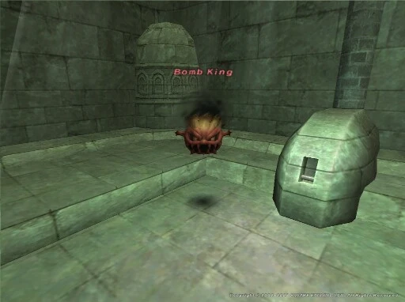

Level 75 reference · Zenith rules
|
Job: Notorious Monster |
 Image source |


|
Zone |
Level |
Drops |
Steal |
Spawns |
Notes | ||||||
|
16-18 |
3 |
A, S, M
| |||||||||
|
HP = Detects Low HP; M = Detects Magic; Sc = Follows by Scent; T(S) = True-sight; T(H) = True-hearing JA = Detects job abilities; WS = Detects weaponskills; Z(D) = Asleep in Daytime; Z(N) = Asleep at Nighttime | |||||||||||
Notes:
- He spawns in 3 different locations: J-6, I-7, or G-7. This is in the Lilac Tower which is at H-3 in East Sarutabaruta.
- He spawns approximately every 8 minutes. (about every 4 game hours)
- When it's time for him to spawn, either him, Doppelganger Dio, Doppelganger Gog, or a measly Balloon will pop. So it's random.
- Killable solo at level 25.
- Soloed him as a BLU 20, and he was a pushover.
- Soloed him as a PUP18/MNK9 with great ease.
Adapted from Eden Wiki: Bomb King · Contributors and history · CC BY-SA 4.0. Revision 1438. Layout, links and optional background text adapted for Zenith.